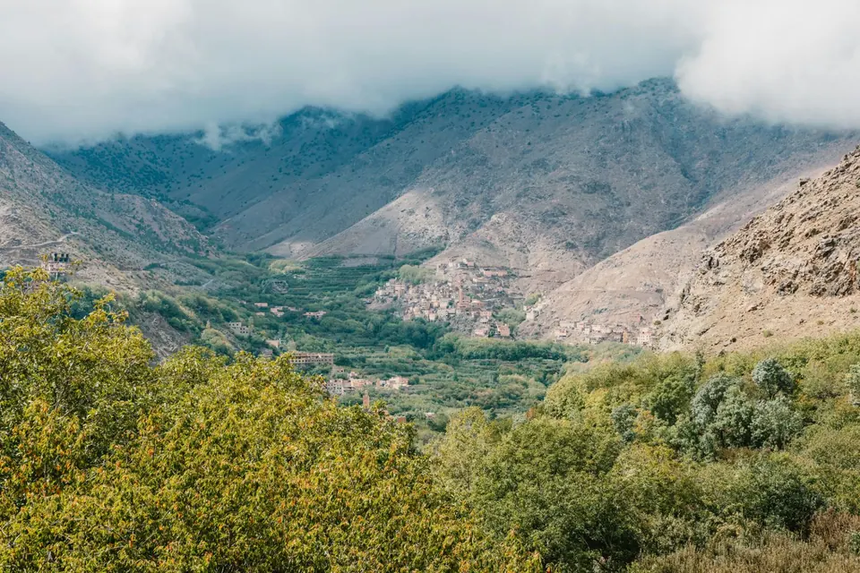
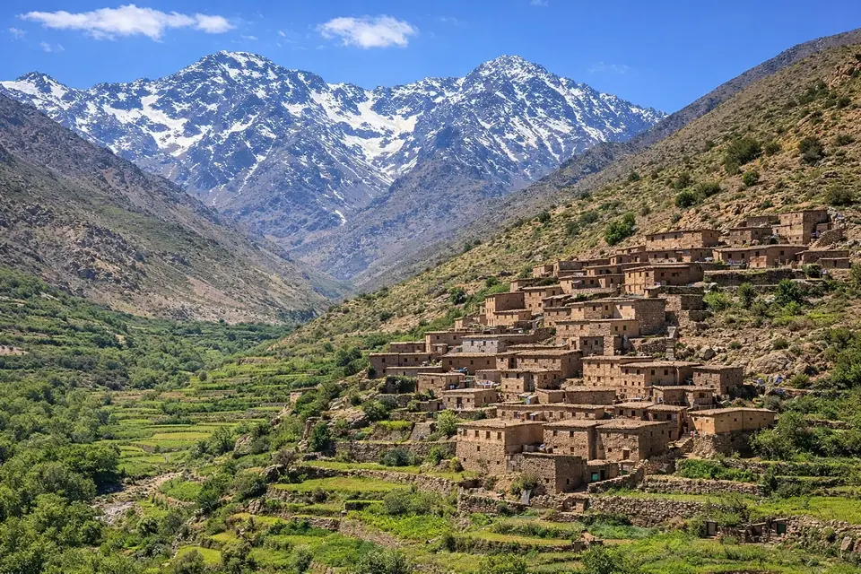
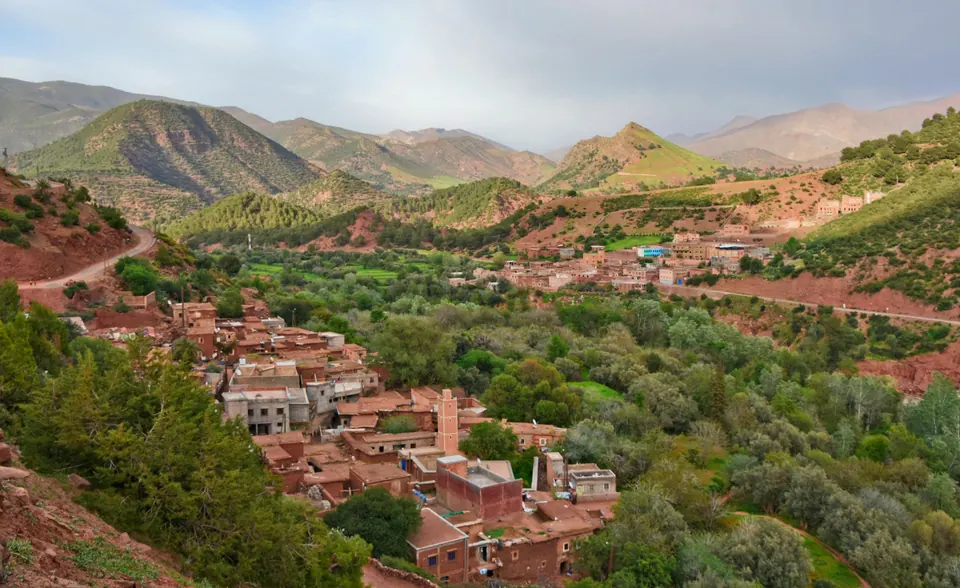
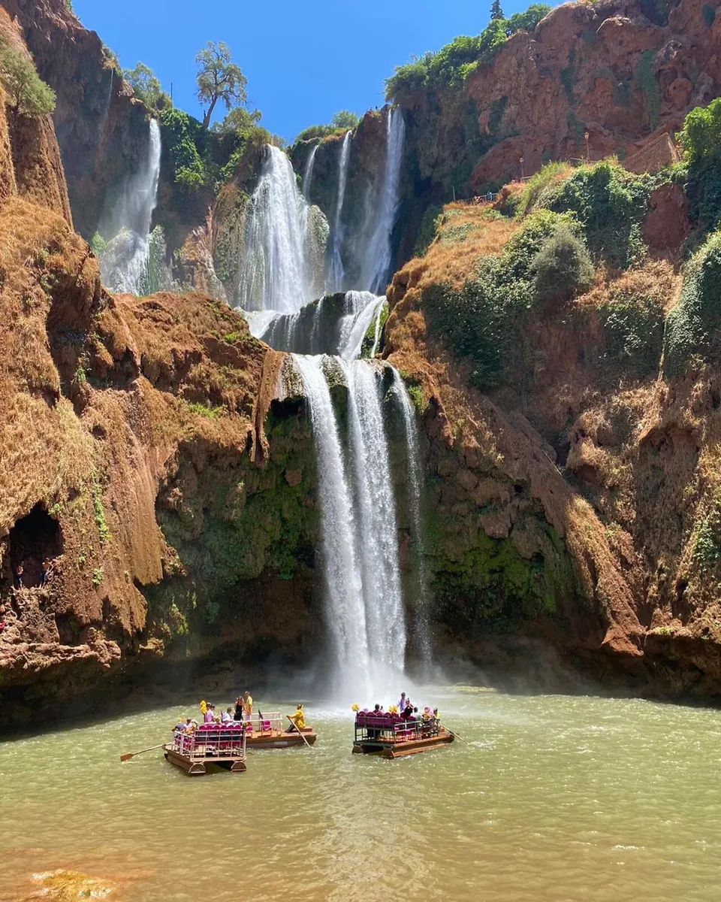

Day trips · MOROCCO EXPLORER TOURS
Imlil, Ourika, Ouzoud or the three valleys: which day trip from Marrakech?
You have one day and want to swap the city for the mountains? Good idea: the High Atlas starts less than two hours from Marrakech. But Imlil, the Ourika, Ouzoud and the three valleys offer very different days. Here is how I describe them to our travellers.

Imlil: walking at the foot of Toubkal
Imlil, about 65 kilometres and an hour and a half away, is the gateway to Toubkal National Park. This is the walkers’ day trip: you leave the vehicle and follow paths through walnut trees and terraced fields to the village of Aroumd, with the peaks of the massif as a backdrop.
Allow three to four hours of easy to moderate walking, with a tea break in a family home. If you like walking and want to feel the real mountains in a day, this is the one: see our Imlil day trip.

The Ourika valley: the closest and gentlest
The Ourika is the easiest valley to reach from Marrakech. The road follows the river past earthen villages, orchards and small riverside restaurants. You visit a women’s argan oil cooperative and a Berber house before reaching Setti Fatma, at the end of the road.
From there, a path leads to a series of waterfalls. It crosses rocks, so good shoes are essential. It is an ideal trip for families or in summer, when you want cool air. Avoid weekends if you can, as they are very busy. All the details: Ourika valley day trip.

The Ouzoud waterfalls: the most spectacular
Ouzoud is about 150 kilometres away, two and a half to three hours by road: it is the longest day. In return the sight is worth it: the Ouzoud river drops from a cliff of about 110 metres into a green gorge.
You walk down to the foot of the falls on a path lined with olive trees, where Barbary macaques live. A boat ride takes you close to the falls. In spring, after the rains, the flow is impressive. Please do not feed the monkeys. See the Ouzoud waterfalls day trip.

The three valleys: a bit of everything, little walking
This day links the Ourika valley, the Asni valley through the Moulay Brahim gorges, and the Imlil valley. There is little walking and plenty of stops at viewpoints, with a short stroll and an optional lunch in a village.
It is the ideal trip if you are discovering Morocco, want to see several Atlas landscapes in one day, or walking is not your priority. On Saturdays you can also stop at the Asni market. See the three valleys day trip.
How to choose
If you like walking, choose Imlil. If you are travelling with family or want a quiet day close to the city, the Ourika. If you want a striking sight and don’t mind the drive, Ouzoud. And if you want a varied overview without effort, the three valleys.
The season matters too: in summer, Imlil and the Ourika offer cool air; in spring, Ouzoud is at its most beautiful. In winter, Imlil under snow is magnificent, as long as you dress warmly.
What is included
All our day trips are private. We pick you up from your accommodation in Marrakech in the morning and bring you back at the end of the day, with a driver and a local guide for the walks. Lunch and drinks are not included, so you can choose where to eat and how much to spend.
Frequently asked questions
Can I combine two day trips on the same day?
Not really, because of the distances. The three valleys trip is designed precisely to see several valleys in one day.
Do I need to book far in advance?
A few days is usually enough. In high season and holidays, book a week ahead to be sure of your dates.
Are the day trips suitable for children?
Yes. The Ourika and the three valleys are the easiest. At Ouzoud and the Setti Fatma waterfalls, paths include steps and rocks, so keep an eye on little ones.
Let’s find the right day for you
Tell us who is travelling, what you would like to do and your dates: we will suggest the ideal day trip and arrange pickup from your accommodation.